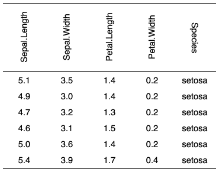

| rotate {flextable} | R Documentation |
apply a rotation to cell text. The text direction can be "lrtb" which mean from left to right and top to bottom (the default direction). In some cases, it can be useful to be able to change the direction, when the table headers are huge for example, header labels can be rendered as "tbrl" (top to bottom and right to left) corresponding to a 90 degrees rotation or "btlr" corresponding to a 270 degrees rotation.
rotate(x, i = NULL, j = NULL, rotation, align = "center", part = "body")
x |
a flextable object |
i |
rows selection |
j |
columns selection |
rotation |
one of "lrtb", "tbrl", "btlr". Note that "btlr" is ignored when output is HTML. |
align |
vertical alignment of paragraph within cell, one of "center" or "top" or "bottom". |
part |
partname of the table (one of 'all', 'body', 'header', 'footer') |
When function autofit is used, the rotation will be
ignored. In that case, use dim_pretty and width instead
of autofit.

Other sugar functions for table style:
align(),
bg(),
bold(),
color(),
empty_blanks(),
fontsize(),
font(),
highlight(),
italic(),
line_spacing(),
padding(),
valign()
library(flextable) ft <- flextable(head(iris)) # measure column widths but only for the body part w_body <- dim_pretty(ft, part = "body")$widths # measure column widths only for the header part and get the max # as height value for rotated text h_header <- max( dim_pretty(ft, part = "header")$widths ) ft <- rotate(ft, j = 1:4, rotation="btlr",part="header") ft <- rotate(ft, j = 5, rotation="tbrl",part="header") ft <- valign(ft, valign = "center", part = "header") ft <- flextable::align(ft, align = "center", part = "all") # Manage header height ft <- height(ft, height = h_header * 1.1, part = "header") # ... mainly because Word don't handle auto height with rotated headers ft <- hrule(ft, i = 1, rule = "exact", part = "header") ft